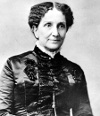

Mary Baker Eddy (1821–1910), New Hampshire’daki bir çiftlikte doğdu. Çocukken kronik rahatsızlıklarla başı beladaydı. Hayatının büyük bölümünde sağlık sorunları yaşadı. Bu durumu pek çok dini düşüncesinin şekillenmesine neden oldu.

Baker Eddy, ilk kez yirmi iki yaşında evlendi ve kısa süre sonra hamile kaldı. Ancak eşi, oğlu George’un 1844 yılında dünyaya gelmesinden kısa süre önce hayatını kaybetti. Öğretmen olarak kazandığı para oğluyla geçinmesine yeterli olmadığı için Eddy, bir doktorla evlendi. Kısa süre sonra boşandılar ve oğlunun velayetini kaybetti.
Mali ve duygusal sıkıntılar sağlık sorunlarının yeniden ortaya çıkmasına neden oldu. Baker, ağır bir depresyon geçiriyordu. Çok dindar biri olmasına rağmen dini inançları onun teselli bulmasını sağlamıyordu.
1850’ler ve 1860’larda sorunlarından kurtulabilmek için çeşitli yollara başvurdu. Doğal ilaçları (homeopathy), sıcak ve soğuk banyoları (hydropathy) ve adını hastalarını hipnoz ederek tedavi edebildiğini iddia eden Maine’li saat imalatçısı Phineas Parkhurst Quimby’den (1802–1866) alan Quimbyizm’i denedi. Fakat sorunları devam etti. 1866 yılında buzda kayıp düşerek felç oldu. Üç gün boyunca hiç ara vermeden İncil’i okuyunca kendini aniden daha iyi hissetmeye başladı. Bunun Tanrı’nın iyileştirici gücünün bir kanıtı olduğunu düşünüyordu.
1872 yılında Science and Health with Key to the Scriptures (Kutsal Kitaplara Göre Sağlık ve Bilim) isimli çalışmasını yazmaya başladı. Kitabı 1875 yılında basılacak ve çok geçmeden çok satanlar arasına girecekti. Asa Gilbert Eddy adındaki bir okuru ile 1877 yılında evlendi. 1879’da Boston’da Bilim Adamı Hz. İsa’nın Kilisesi’ni (The Church of Christ, Scientist) kurdu. Kilisesinin temel öğretisi İncil’in hastalıkları iyileştirmede tıptan daha etkili olduğuydu.
Öğretilerini yaygınlaştırmak için okuma odaları kurdu. Takipçileri burada İncil’i ve kilise yayınlarını okuma imkanı bulabiliyordu. Okuma odaları ve Christian Science Monitor gazetesi günümüzde hâlâ etkili olmaya devam etmektedir.
1889 yılında kiliseye liderlik yapmayı bıraktı. New Hampshire’a taşındı. Seksen dokuz yaşındaki ölümünün ardından Massachusetts’teki Cambridge’e gömüldü.
Ek Bilgiler
1- Baker Eddy’nin kardeşi Albert (1810–1841), New Hamshire’da Franklin Pierce’le (1804–1869) birlikte avukatlık yapıyordu. Pierce daha sonra ABD’nin 14. başkanı olacaktı.
2- İlk eşinin ölümünün ardından Baker Eddy bir yuva açtı. Ancak birkaç ay içerisinde iflas etti.
3- Kurulduğundan beri pek çok kişi Hıristiyan Bilimi’ni ilaç karşıtlığı nedeniyle eleştirmektedir. İrlandalı yazar George Bernard Shaw (1856–1950) bu akımın hem modern tıbbı hem de Hıristiyanlık’taki günah kavramını reddetiğini söyler. Kilisenin ne Hıristiyan ne de bilimsel olduğu esprisini yapar.